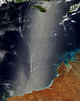

sunglint

Definition: Sunglint is a phenomenon that occurs when sunlight reflects off the surface of the ocean at the same angle that a satellite or other sensor is viewing the surface. In the affected area of the image, smooth ocean water becomes a silvery mirror, while rougher surface waters appear dark. Sometimes the sunglint region of satellite images reveals interesting ocean or atmospheric features that the sensor does not typically record.
Source: Wikipedia
Wikipedia Page
Wikidata Page